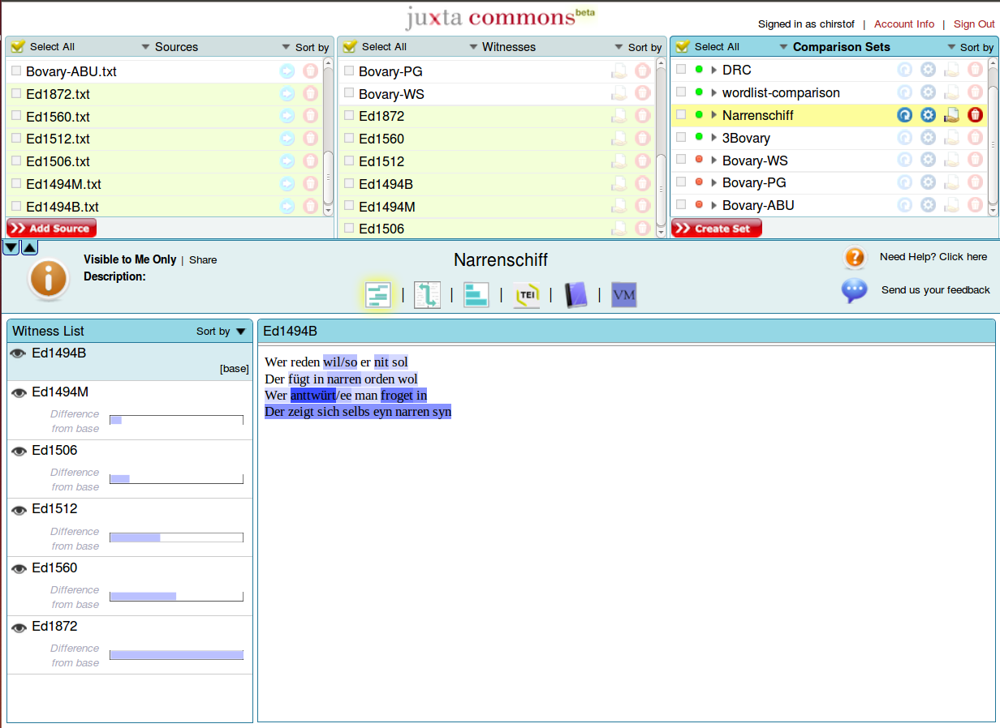
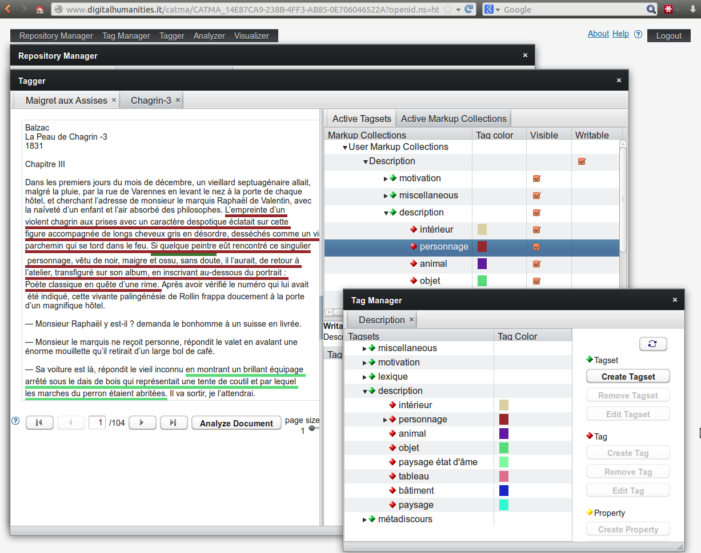

Literaturverwaltung mit Zotero
Workshop Digitale Forschungsmethoden in der Romanistik
Forum Junge Romanistik 2016, Universität Würzburg
Christof Schöch (CLiGS, Universität Würzburg)

Überblick
- 0. Ziele dieses Tutorials
- 1. Was ist Zotero?
- 2. Installation von Zotero
- 3. Referenzen eintragen
- 4. Referenzen organisieren
- 5. Referenzen beim Schreiben verwenden
- 6. Referenzen exportieren
- 7. Fortgeschrittene Szenarien
- 8. Weiterlesen, Weiterlernen?
1. Was ist Zotero?
Kollationierung: Juxta
Textanalyse
Perspektiven der digitalen Textanalyse
- Quantitative vs. qualitative Verfahren
- Klassifikation vs. Clustering
CATMA: Annotation
TXM: Analyse